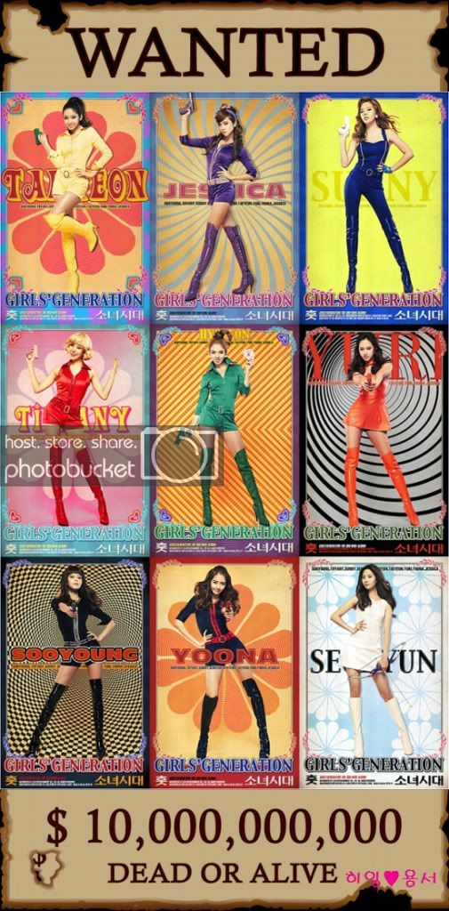
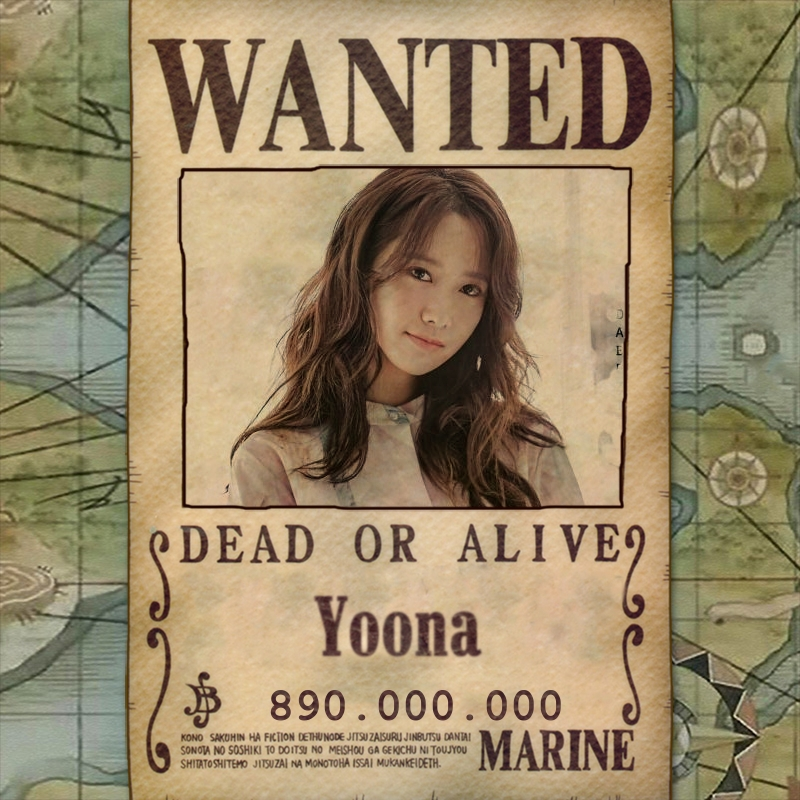
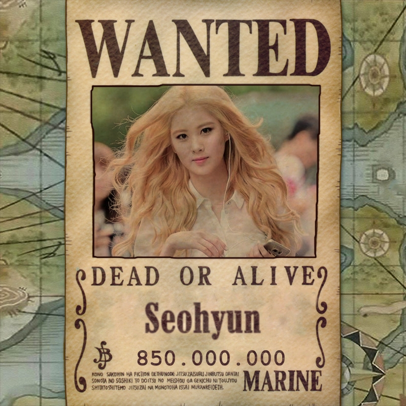
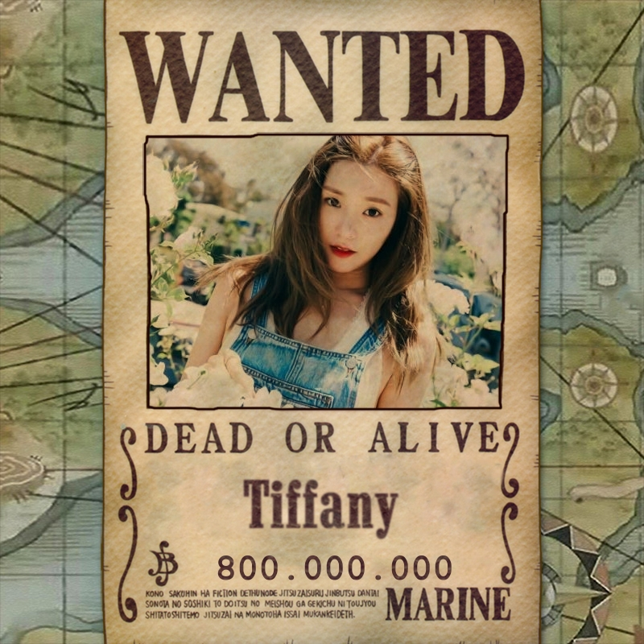
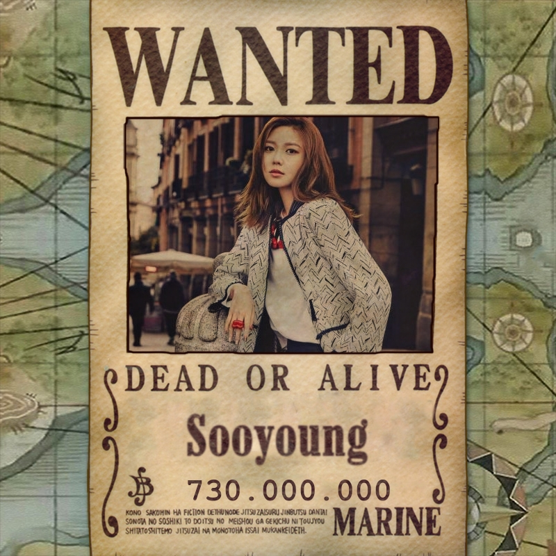
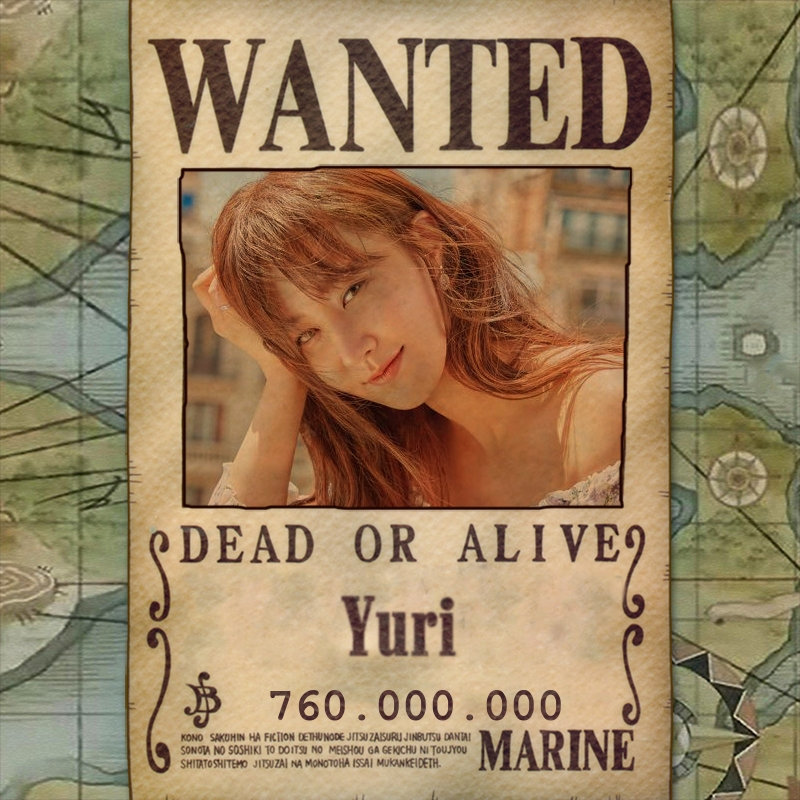
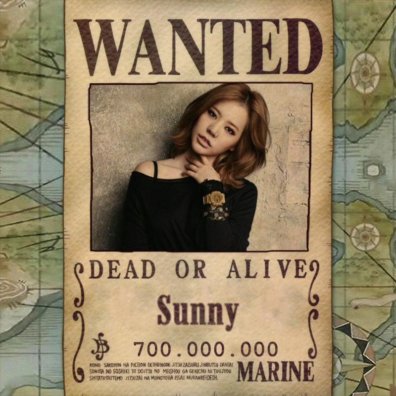
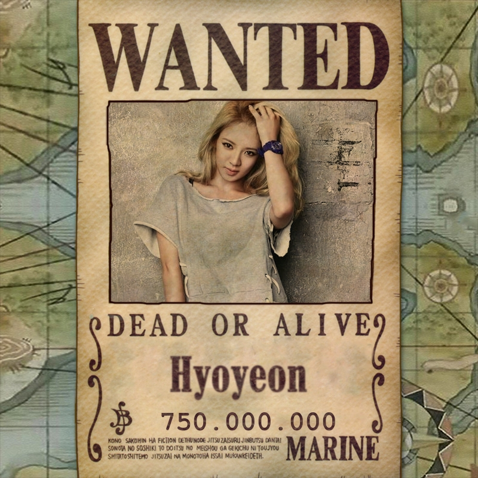

Girls Generation !! SNSD
Members

SNSD member
- Taeyeon
- Yoona
- Seohyun
- Tiffany
- Soo-young
- Yuri
- Jessica
- Sunny
- Hyo-yeon
- Taeyeon
-
- Tên thật: Kim Taeyeon (김태연)
- Nghệ danh: Taeyeon
- Ngày sinh: 9/3/1989
- Chiều cao: 1m62
- Cân nặng: 44kg
- Nhóm máu: O
- Vai trò trong nhóm: Nhóm trưởng,hát chính
- Ngôn ngữ: Hàn Quốc,Nhật Bản,Trung Quốc (cơ bản)
- Trường học: Trung học nghệ thuật Jeonju
- Sở thích: Bơi lội
- Thời gian đào tạo: 3 năm+5 tháng
- Facebook: Link Fanpage Taeyon
- Yoona
-

- Tên thật: Im Yoonah (임윤아)
- Nghệ danh: Yoona
- Ngày sinh: 30/5/1990
- Chiều cao: 1m66
- Cân nặng: 48kg
- Nhóm máu: B
- Vai trò trong nhóm: Nhảy chính,Hát Phụ
- Ngôn ngữ: Hàn Quốc,Nhật Bản,Trung Quốc (cơ bản)
- Trường học: Trung học Daeyoung,Đại học Dong Guk
- Thời gian đào tạo: 7 năm+ 2 tháng
- Facebook:Link Fanpage Yoona
- Seohyun
-

- Tên thật: Seo Joo Hyun (서주현)
- Nghệ danh: Seo Hyun
- Ngày sinh: 28/6/1991
- Chiều cao: 1m69
- Cân nặng: 48kg
- Nhóm máu: A
- Vai trò trong nhóm: Hát chính
- Ngôn ngữ: Hàn Quốc,Nhật Bản,Anh (cơ bản),Trung Quốc (cơ bản)
- Trường học: Trung học Daeyoung,Đại học Dong Guk
- Sở thích: Đọc sách
- Năng khiếu: Chơi piano
- Thời gian đào tạo: 6 năm+ 6 tháng
- Facebook:Link Fanpage Seohyun
- Tiffany
-

- Tên thật: Stephanie Hwang
- Nghệ danh: Tiffany
- Ngày sinh: 1/8/1989
- Chiều cao: 1m62
- Cân nặng: 47kg
- Nhóm máu: O
- Vai trò trong nhóm: Hát chính
- Ngôn ngữ: Hàn Quốc,Nhật Bản,Anh (thành thạo),Trung Quốc (cơ bản),Tây Ban Nha (cơ bản)
- Trường học: Trung học Diamond Bar (Mỹ),Trường quốc tế Hàn Quốc Kent
- Sở thích: Tạo ra hoặc chạm vào những rãnh dài để trang trí
- Thời gian đào tạo: 3 năm+ 7 tháng
- Facebook:Link Fanpage Tiffany
- Soo-young
-

- Tên thật: Choi Sooyoung
- Nghệ danh: Sooyoung
- Ngày sinh: 10/2/1990
- Chiều cao: 1m70
- Cân nặng: 48kg
- Nhóm máu: O
- Vai trò trong nhóm: Hát phụ, nhảy
- Ngôn ngữ: Hàn Quốc,Trung Quốc (cơ bản),Nhật Bản (thành thạo)
- Trường học: Trưỡng nữ sinh Jungshin, Đại học Chung Ang
- Thời gian đào tạo: 6 năm+ 3 tháng
- Facebook:Link Fanpage Soo-young
- Yuri
-

- Tên thật: Kwon Yuri (권유리)
- Nghệ danh: Yuri
- Ngày sinh: 5/12/1989
- Chiều cao: 1m68
- Cân nặng: 45kg
- Nhóm máu: AB
- Vai trò trong nhóm: Nhảy chính
- Ngôn ngữ: Hàn Quốc,Nhật Bản,Trung Quốc (thành thạo)
- Trường học: Trung học NeungGok,Đại học Chung-Ang
- Sở thích: Bơi lội, múa Ballet, chơi piano và violin
- Thời gian đào tạo: 5 năm+ 11 tháng
- Facebook:Link Fanpage Yuri
- Jessica
-
- Tên thật: Jessica Jung Soo Yeon (제시카 정)
- Nghệ danh: Jessica- chị gái Krystal của F(x)
- Ngày sinh: 18/4/1989
- Chiều cao: 1m63
- Cân nặng: 45kg
- Nhóm máu: B
- Vai trò trong nhóm: Hát chính
- Ngôn ngữ: Hàn Quốc,Nhật Bản,Trung Quốc (cơ bản),Anh (thành thạo)
- Trường học: Trường quốc tế Hàn Quốc Kent
- Sở thích: Đám bốc,bóng đá
- Năng khiếu: Chơi piano
- Thời gian đào tạo: 7 năm+ 6 tháng
- Facebook:Link Fanpage Jesscia
- Sunny
-

- Tên thật: Lee Sun Kyu
- Nghệ danh: Sunny
- Ngày sinh: 15/5/1989
- Chiều cao: 1m58
- Cân nặng: 43kg
- Nhóm máu: B
- Vai trò trong nhóm: Hát chính,Rap
- Ngôn ngữ: Hàn Quốc, Nhật Bản
- Trường học: Trường nữ sinh Baehwa
- Sở thích: Bơi lội,thể thao,chơi game
- Facebook:Link Fanpage Sunny
- Hyo-yeon
-

- Tên thật: Kim Hyoyeon
- Nghệ danh: Hyoyeon
- Ngày sinh: 22/9/1989
- Chiều cao: 1m58
- Cân nặng: 48kg
- Nhóm máu: AB
- Vai trò trong nhóm: Nhảy chính
- Ngôn ngữ: Hàn Quốc, Nhật, Trung Quốc, Anh (cơ bản)
- Trường học: Trung học Bắc Kinh
- Sở thích: Nhảy
- Thời gian đào tạo: 6 năm+ 1 tháng
- Facebook:Link Fanpage Hyoyeon